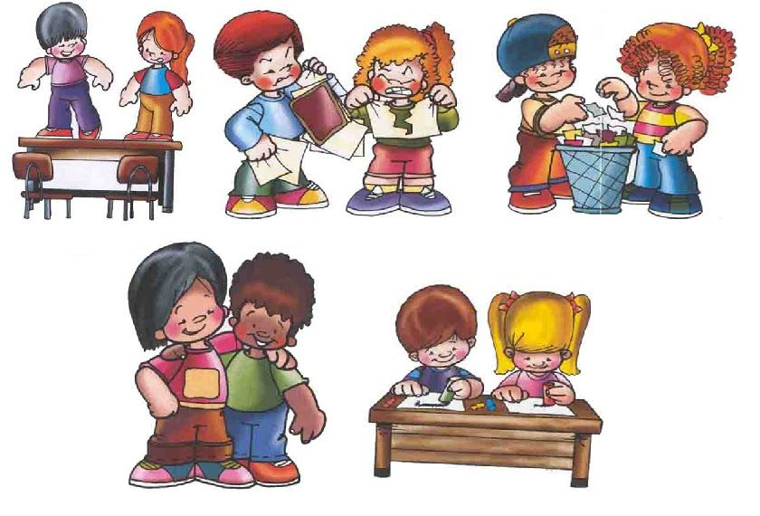

"> HONESTA: Mis padres me han enseñado ser honesta siempre
auque yo tenga la culpa me han inculado que decir mentira no esta bien,
si no que es mejor ser honesta y aprender los errores que en momentos dificiles cometemos.
RESPONSABLE: Soy responsable en mis actividades dia a dia puede que no lo haga bien mis actividades pero soy responsable entregandolas y aprendiendo que es lo mas importante y en todas partes o luagres puedo aplicar lo que he hecho.
HONRADA:Desde pequeña me han hablado con un caracter algo fuerte para aprender que no se debe de tocar nada ageno, en casa agenas desde pequeña me decian que no toque nada hasta que me den permiso de hacer uso.
SOLIDARIA: Siempre me ha gustado ser solidaria con las personas que me rodean ayudarlas en lo que pueda por que soy muy sentimental y eso me lleva a poner en los zaptos de otro auqnue ellos despues no ayuden a uno siempre me ha gustado ayudar.
AMABILIDAD: Soy amable con mis vecinos y mi famili tratandolos con respeto y saludandos como se debe.
 AMOR: Me han enseñado a no tener rencor asi las personas que me hacen el mal si no mas bien dar amor porque me han dicho que el rencor no trae nada bueno y no es bueno vivir asi.